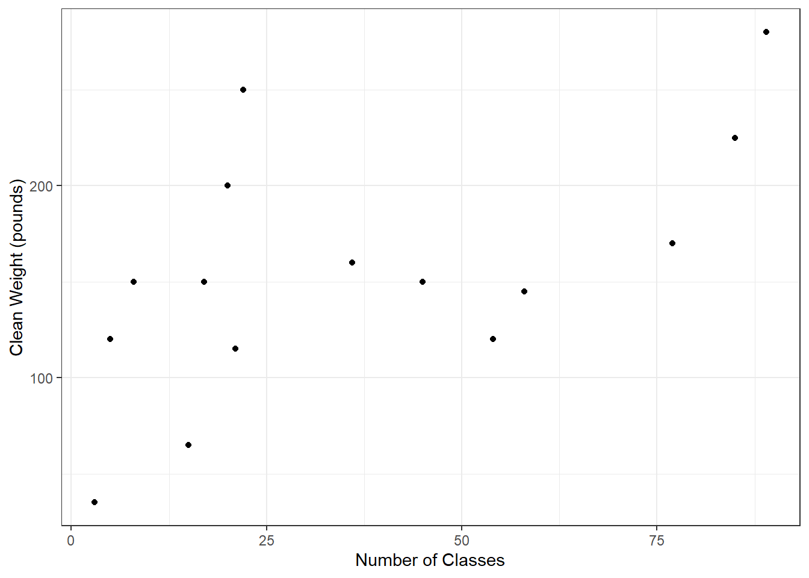
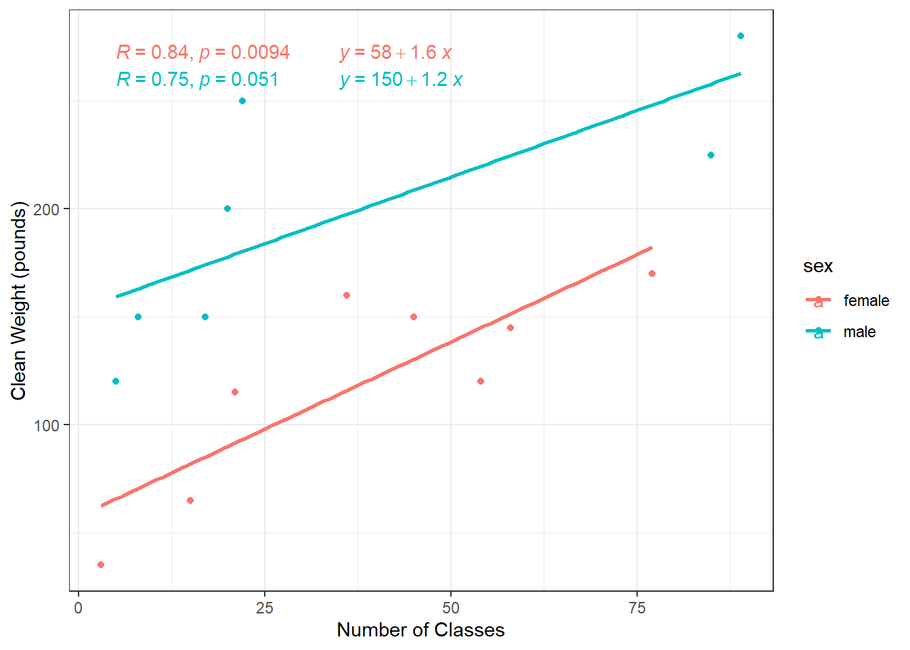

Chapter 2 Linear Regression
Primary reference for this chapter: Center Stat: Linear Regression Tutorials.
2.1 Intro to Linear Regression
Linear regression is the foundation for more advanced techniques like structural equation model, factor analysis, multi level models, mixed effect models, etc. We are interested in exploring the statistical relationship: we are predicting outcomes (not a deterministic relationship).
Uses example with experience and performance where our outcome measure is experience (x) and our predictor is performance (y). We can build a model to see how the average level of performance changes as a function of experience.
In a regression model we have:
\[ Yi = f(x) + \epsilon \]
- A function to characterize the relationship between x and y
- And there is also an inherent randomness for any individual represented by \(\epsilon\)
Of course a linear regression model is linear… so the function is a straight line.
What everyone learned in school:
\[ Y = mx + b \]
- where m is the slope of the line and b is the intercept
More formally:
\[ Yi = \beta_0 + \beta_1x_i + \epsilon_i \] 3 parameters of interest (assuming 1 predictor model)
- \(\beta_0\)
- This is the intercept, which can be interpreted as the expected value of y when x = 0.
- Note: sometimes the intercept can be meaningless.
- \(\beta_1\)
- Change in y for a 1 unit change in x. Also known as the rise over run. How much change do we expect to change in our outcome given a 1 unit change in our predictor?
- \(\sigma^2\)
- Variance of residuals
2.2 Demo
I made a fake crossfit dataset for this demo:
weight= weight in poundsclasses= total number of crossfit classes attendedclean_weight= one of the olympic weight movements in crossfit is called cleans. This variable is the max weight in pounds for each individualmile1= time in minutes to complete mile 1mile2= time in minutes to complete mile 2
## # A tibble: 6 × 7
## id sex weight classes clean_weight mile1 mile2
## <dbl> <chr> <dbl> <dbl> <dbl> <dbl> <dbl>
## 1 1 female 125 15 65 8.7 9.9
## 2 2 female 138 45 150 10.3 10.5
## 3 3 female 108 3 35 12.3 12.9
## 4 4 male 177 22 250 7.3 7
## 5 5 male 190 8 150 10.7 11.2
## 6 6 female 186 77 170 10.2 10.5Let’s plot the relationship between classes and cleans. We may predict that the number of classes people attend may positively correlate with clean weight
Of course, we may expect sex to influence our results, but we’ll ignore that for now.
ggplot(mydat, aes(x=classes, y=clean_weight)) +
geom_point() +
theme_bw() +
labs(x = "Number of Classes", y = "Clean Weight (pounds)")
It looks like there’s a positive relationship. Let’s add in a regression line or line of best fit.
Using the ggpubr package, we can add the correlation coefficient (and p-value) along with the regression line equation.
ggplot(mydat, aes(x=classes, y=clean_weight)) +
geom_point() +
theme_bw() +
labs(x = "Number of Classes", y = "Clean Weight (pounds)") +
geom_smooth(method = "lm", se = FALSE) +
stat_cor(label.x = 60, label.y = 80) +
stat_regline_equation(label.x = 60, label.y = 65) 
- Our intercept is 110 which can be interpreted as the expected clean weight with 0 classes.
- Our slope is 1.3 which can be interpreted as with each additional crossfit class attended, clean weight will increase by 1.3 pounds on average.
Here we’ll consider the effects of sex:
ggplot(mydat, aes(x=classes, y=clean_weight, color=sex)) +
geom_point() +
theme_bw() +
labs(x = "Number of Classes", y = "Clean Weight (pounds)") +
geom_smooth(method = "lm", se = FALSE) +
stat_cor(aes(color = sex), label.x = 5) +
stat_regline_equation(aes(color = sex), label.x = 35) 